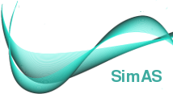

Universidad de Córdoba
Escuela Politécnica Superior
Centro de Ayuda
SimAS - Simulador de Análisis Sintácticos

Acceder
Titulación: ingeniería informática
Desarrollado por: Vanesa González Pérez
Dirigido por: Dr.Nicolás Luis Fernández García
Junio 2015